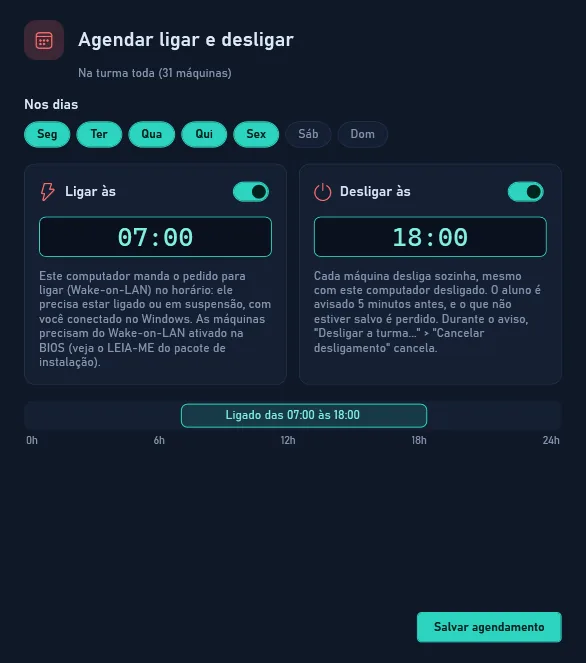
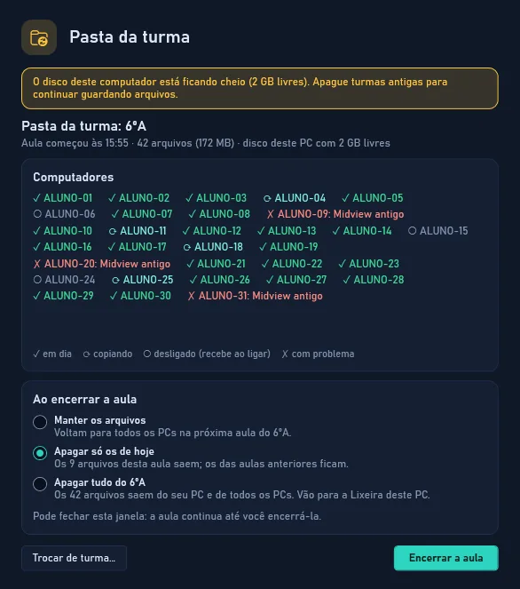
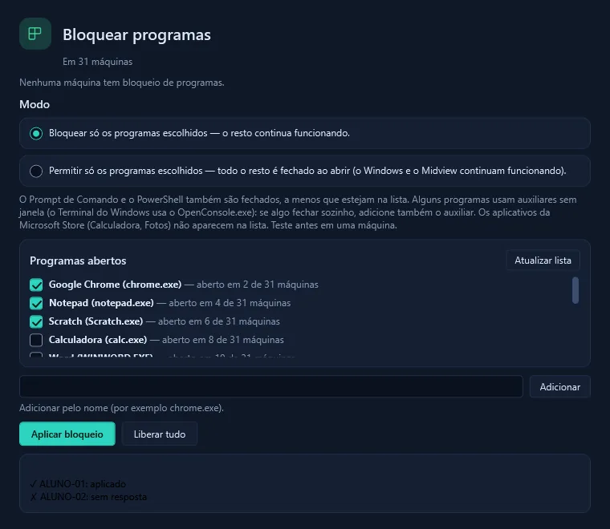
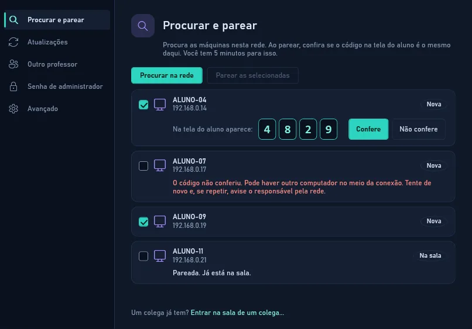

Controle total do seu laboratório.Sem complicação.
O Midview coloca a tela de cada aluno no seu computador. Daí você acompanha a aula, ajuda quem travou, manda e recolhe arquivos, bloqueia o que tira o foco e liga ou desliga o laboratório, tudo sem sair da sua mesa.
Muito do que hoje pede uma volta pelo laboratório vira um clique na sua mesa.
Antes
Com o Midview
Passar atrás de cada aluno para ver se está na atividade.
Todas as telas ao vivo numa grade, no seu computador.
Pedir silêncio e esperar todos tirarem a mão do mouse.
Bloquear telas: um cadeado em todas as máquinas, na hora.
Passar material por pendrive ou e-mail, máquina por máquina.
Enviar arquivo: chega na Área de Trabalho de todos de uma vez.
Recolher os trabalhos no fim da aula, um a um.
Recolher arquivos: tudo o que os alunos entregaram vem para a sua pasta.
Ditar o endereço do site e conferir quem digitou errado.
Abrir site: o mesmo endereço abre em todas as máquinas.
Ligar e desligar o laboratório inteiro à mão.
Ligar, Desligar e Agendar: o laboratório liga e desliga sozinho.
Funções
Tudo na barra de ferramentas, do jeito que aparece no programa
Os botões da barra agem na turma toda. Com o botão direito sobre uma máquina, a mesma ação vale só para ela.
Energia
Ligue e desligue o laboratório de longe.
Desligar e Reiniciar
Desliga ou reinicia as máquinas na hora ou com aviso de 1 ou 5 minutos, e dá para cancelar. Se quiser, as atualizações do Windows que estiverem esperando são instaladas junto.
Simplifica: no fim do dia, ninguém precisa passar de máquina em máquina.
Ligar
Liga as máquinas pela rede (Wake-on-LAN).
Simplifica: o laboratório já está ligando enquanto a turma entra.
Agendar
Escolha os dias da semana e os horários de ligar e de desligar.
Simplifica: o laboratório liga antes da primeira aula e desliga sozinho depois da última.

Agendar: dias e horários para ligar e desligar
Tela
Veja e assuma a tela de qualquer aluno.
Ver a tela
Abre a tela de um aluno em tamanho grande, ao vivo.
Simplifica: você acompanha a atividade sem sair da mesa nem ficar atrás do aluno.
Controlar
Você usa o teclado e o mouse da máquina do aluno; o dele fica travado e a tela avisa que o professor está no controle. O controle continua mesmo quando aparece o pedido de senha de administrador (UAC) e, com a senha do laboratório guardada, você a preenche no UAC com um clique.
Simplifica: resolve a dúvida, o programa travado ou a instalação que pede senha de longe, sem ir até a máquina do aluno.
Bloquear telas
Cobre todas as telas com um cadeado e trava teclado e mouse até você desbloquear.
Simplifica: a atenção da turma volta para você num clique, na hora de explicar.
Turma
Fale com a turma e troque arquivos.
Mensagem
Mostra um recado na tela de todos os alunos.
Simplifica: avisos como "faltam 5 minutos" chegam a todos, sem levantar a voz.
Bate-papo
Conversa com a turma; a resposta de cada aluno chega só para você.
Simplifica: o aluno tímido pergunta sem expor a dúvida para a sala.
Enviar arquivo
Coloca o arquivo na pasta "Arquivos do professor", na Área de Trabalho de cada aluno.
Simplifica: sem pendrive e sem e-mail: todos recebem o mesmo material ao mesmo tempo.
Recolher arquivos
Copia o que cada aluno pôs na pasta "Entregar ao professor" para a sua pasta Documentos\Midview\Recolhidos.
Simplifica: os trabalhos da aula chegam todos num lugar só, prontos para corrigir.
Pasta da turma
Cria, na Área de Trabalho de cada aluno, a pasta da turma da aula. O que um aluno baixa ou salva nela aparece em todos os computadores. Ao encerrar a aula, escolha manter os arquivos, apagar só os de hoje ou apagar tudo.
Simplifica: o aluno não precisa sentar sempre na mesma máquina para achar o trabalho da aula passada.

Pasta da turma durante a aula
Programas e sites
Abra, instale e tire da frente programas e sites.
Abrir site e Abrir programa
Abre o mesmo site ou programa em todas as máquinas. Os que você mais usa ficam salvos no menu.
Simplifica: ninguém erra o endereço e a atividade começa junto para todos.
Instalar programa
Instala um programa na turma toda, como administrador, sem a tela do UAC e sem digitar senha em cada máquina.
Simplifica: um programa novo chega a todo o laboratório de uma vez, sem ir de máquina em máquina.
Desinstalar programa
Lista os programas instalados a partir de uma máquina e desinstala os que você escolher na turma.
Simplifica: tira do laboratório o que não é mais usado, em todas as máquinas juntas.
Fechar programas
Fecha os programas abertos, com aviso e prazo de 30 segundos ou 1 minuto para o aluno salvar, ou na hora.
Simplifica: o fim da aula fica organizado e as máquinas ficam prontas para a próxima turma.
Bloquear programas
Proíbe os programas de uma lista, ou deixa abrir só os que você permitir.
Simplifica: jogos e programas fora da aula ficam fechados sem você vigiar tela por tela.
Bloquear sites
Bloqueia a internet inteira ou só os sites que você escolher. O bloqueio continua mesmo se a máquina reiniciar.
Simplifica: a turma fica na atividade, inclusive em dia de prova.

Bloquear programas: a lista do que fica fechado
Configurar
Prepare as máquinas uma vez, para todas.
Painel do laboratório
Aplica ajustes do Chrome e do Windows em todas as máquinas: bloqueador de anúncios, bloquear downloads, modo visitante, travar a barra de tarefas e outros. "RESET geral" desfaz tudo.
Simplifica: todas as máquinas ficam configuradas iguais, sem você ir em cada uma.
Máquinas da sala
Procura as máquinas na rede, pareia cada uma com você (conferindo em até 5 minutos o código na tela do aluno) ou entra na sala de um colega, atualiza o Midview delas pela rede e guarda a senha de administrador do laboratório (só neste computador, protegida pelo Windows) para o "Preencher a senha de administrador" do controle.
Simplifica: atualizar o laboratório não pede pendrive: uma máquina testa a versão nova primeiro e, se algo falhar, ela volta sozinha à anterior.

Máquinas da sala: procurar na rede
E mais
Os detalhes que fazem diferença na aula
Botão direito em uma máquina
As ações da barra valem também para um aluno só. Ali ficam ainda Conversar, para falar só com aquele aluno, Desinstalar programa, Editar a máquina e Remover da lista da sala.
A grade do seu jeito
"Visualizar todos" encaixa todas as telas sem rolar, "Só online" esconde as máquinas desligadas e o controle deslizante (ou Ctrl + roda do mouse) muda o tamanho das telas. Com "Organizar sala", arraste as telas até ficarem como as máquinas estão na sala; "Alinhar" acerta tudo.
Mais de um professor
"Dar acesso a um colega..." gera um código que vale por 10 minutos. O colega digita o código em "Entrar na sala de um colega..." e passa a ver as mesmas máquinas. Ou use "Permitir novo professor": por 10 minutos, as máquinas aceitam o pareamento de outro professor. Com dois computadores de professor, a pasta da turma funciona nos dois.
Como começar
Em quatro passos, o laboratório está na sua tela
Baixe o instalador
O mesmo MidviewSetup.exe serve para o seu computador e para as máquinas. Não precisa instalar mais nada.
Instale no seu computador
Escolha Professor. O atalho "Midview - Sala de aula" aparece na Área de Trabalho. Se aparecer a tela "O Windows protegeu o computador", clique em Mais informações e em Executar assim mesmo.
Instale nas máquinas
Em cada máquina do laboratório, escolha Aluno.
Traga as máquinas
No Midview, clique em Máquinas da sala > Procurar na rede e pareie, conferindo o código de 6 dígitos que aparece na tela do aluno (você tem 5 minutos para isso).
Pareie as máquinas logo depois de instalar: até o primeiro pareamento, qualquer professor da rede pode pareá-las. Quem cuida da informática pode instalar várias máquinas de uma vez com MidviewSetup.exe /VERYSILENT /SUPPRESSMSGBOXES /TIPO=aluno.
Privacidade e requisitos
Tudo fica dentro da escola
Privacidade
Nada sai da rede da escola. O Midview não envia dados ao desenvolvedor nem à internet.
Comunicação protegida. Telas, comandos e arquivos passam criptografados, e cada máquina só aceita os professores pareados com ela.
Avise a turma. A tela do aluno pode ser vista sem aviso na máquina dele; só o controle mostra um aviso. A escola deve informar alunos e responsáveis, como pede a LGPD.
Senha de administrador só no seu PC. Se guardada, fica apenas no computador do professor, protegida pelo Windows, e nunca é enviada às máquinas dos alunos.
Requisitos
Windows 10 ou 11 de 64 bits no seu computador e nas máquinas.
Mesma rede local para o professor e o laboratório.
Administrador do Windows só na hora de instalar.
Para Ligar pela rede, o Wake-on-LAN ativo na BIOS e na placa de rede das máquinas.
Gratuito para escolas
Transforme a sua sala de aula
Baixe o instalador, instale no seu computador e nas máquinas, e comece a próxima aula com o laboratório inteiro na sua tela.